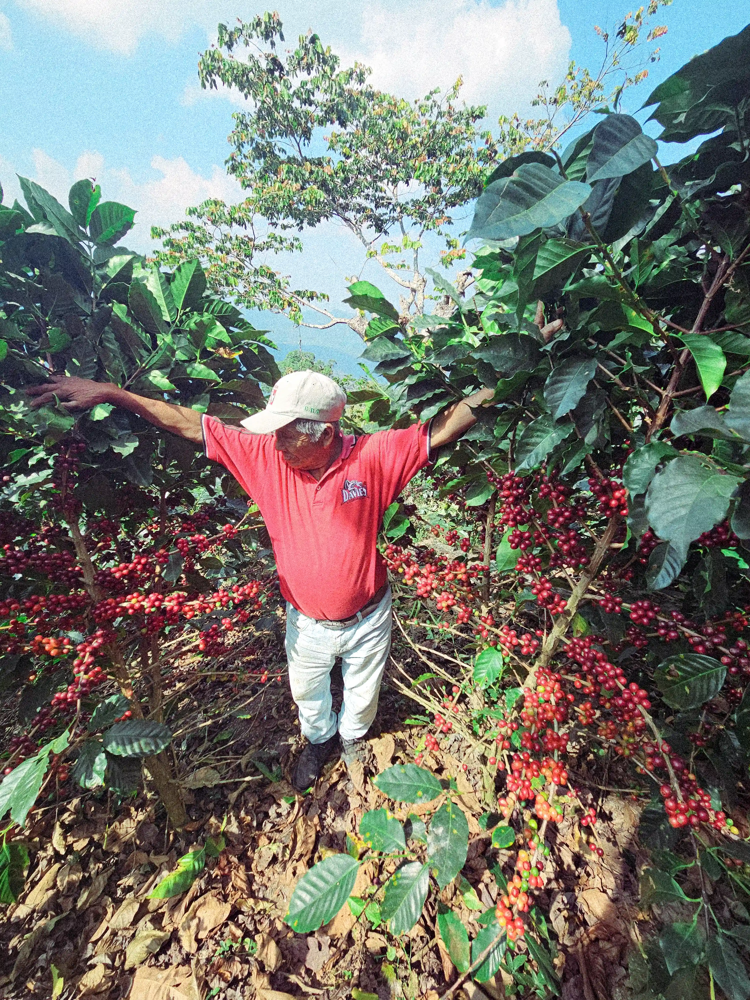
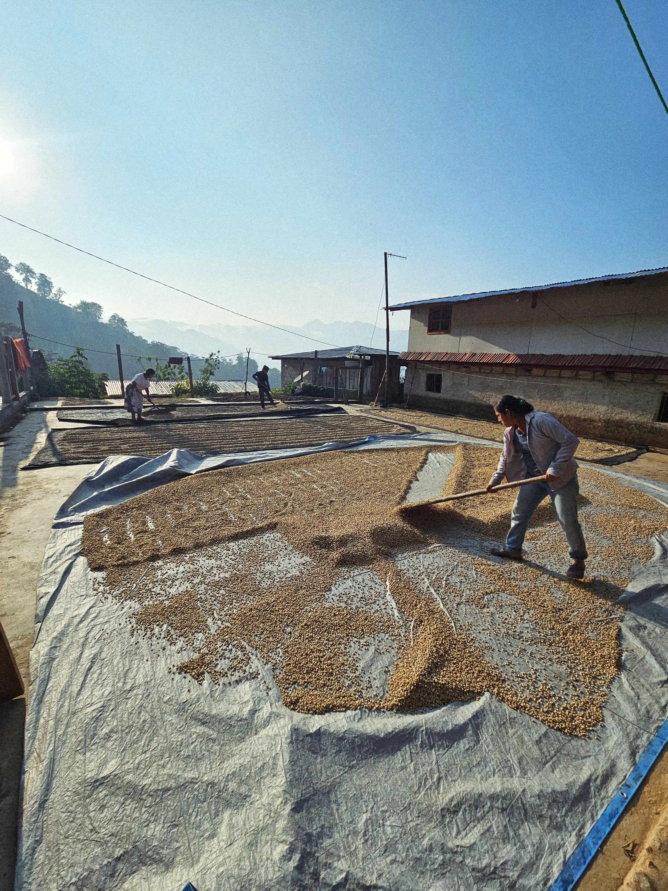
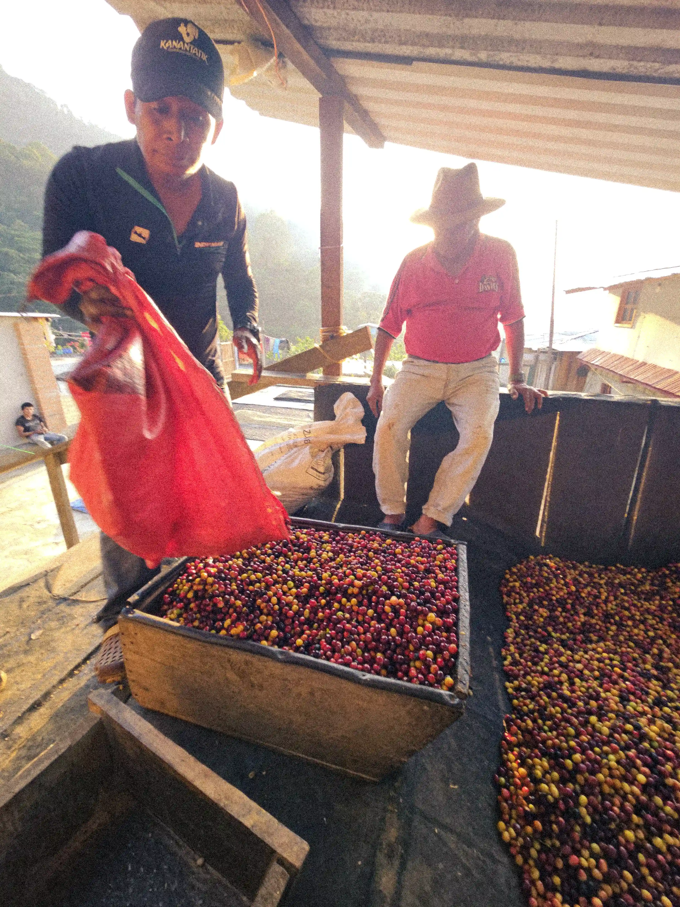
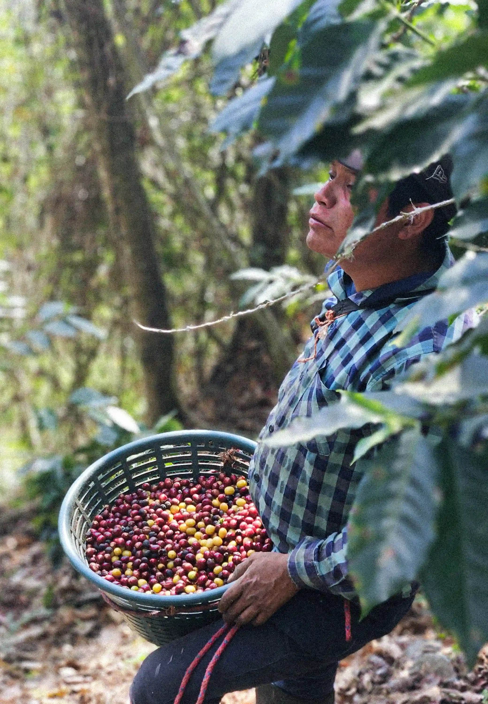

En las laderas de los cerros, la familia Guzmán cultiva los cafetales bajo la sombra de árboles de dosel y especies frutales, mediante una agricultura limpia y libre de agroquímicos. Cosechar en estas altitudes es una labor exigente, sumado a una selección meticulosa de cada cereza. Una vez recolectado, el café atraviesa un proceso de lavado que consiste en eliminar la pulpa y el mucílago de la cereza utilizando agua y fermentación. Finalmente reposa en los traspatios sobre lonas para ser secado con ayuda del sol.
Agradecemos a nuestro amigo Max por ser el puente con la familia Guzmán y contarnos más sobre la historia detrás de este café.




Marago · La Concordia
Desde San Francisco, en el municipio de La Concordia, la familia Guzmán cultiva mucho más que un café. La variedad Marago es famosa por su gran tamaño, pero el verdadero asombro ocurre en la taza. Su cuidadoso proceso lavado entrega una taza limpia con una acidez brillante que hace justicia a la riqueza de su origen.
Productores
Familia Guzmán
Origen
La Concordia, Chiapas
Finca
Rancho El Edén
Varietal
Marago
Altitud
1600 m.s.n.m.
Proceso
Lavado
Notas
Especias, Toronja, Frutas de hueso